独自ライブラリのつくりかた¶
開発時に作成したソフトウェア部品をライブラリとして登録する方法について示します。ライブラリ化したソフトウェアは、部品として再利用できる状態になります。
この章では、このライブラリ機能の基本的な使い方について説明します。最初にライブラリの作成と、その使い方について大まかな手順概要を説明し、続いてライブラリ作成の詳細な設定方法について説明します。
事前準備（ライブラリプロジェクトの作成）¶
ライブラリの基になるTwinCATプロジェクトを作成します。この中で作成したファンクション、および、ファンクションブロックが、ライブラリとして活用できます。したがってファンクションやファンクションブロックを作成する際には、次の注意を必ず守ってください。
- カプセル化を厳密に守る
機能を独立させるには、ファンクションやファンクションブロック外で定義されたグローバルなデータを使用せず、ファンクション、ファクションブロック内の変数で定義したデータを使ってください。型を定義したデータをアクセッサ（Property）を通じて受け渡します。
大きな構造データについてはインターフェースやリファレンス、ポインタなどを用いて参照渡しすることを意識してください。
- ドキュメントを明記する
少なくともMethod/Propertyや、VAR_INPUT, VAR_OUTPUTなどの変数には必ず行コメントを付けてください。ライブラリの説明欄にそのまま転記されます。
作成したライブラリをより正しく便利に使ってもらうには、ライブラリドキュメントの作成に示した方法でドキュメントを記述いただくことを推奨します。
- 定数およびライブラリパラメータを活用してください
配列のサイズなどを定義する場合は、定数
VAR CONSTANTを活用してください。また、ライブラリを使うアプリケーション要件により配列サイズなどのリソース量を調整を必要とする場合は、次項に示すライブラリパラメータ化することができます。
ライブラリパラメータの設定方法¶
ライブラリパラメータは、コンテキストメニューのAddからParameter List...を作成します。GVLs以下に作成してください。
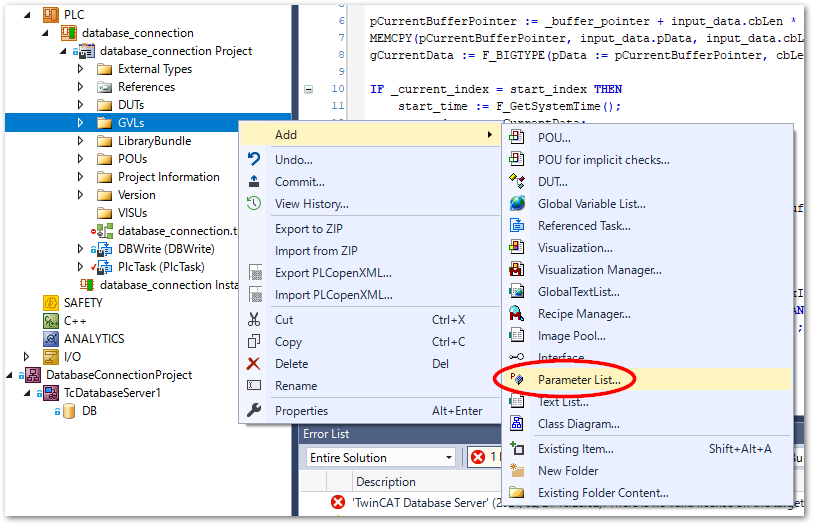
パラメータへアクセスするためのnamespaceを設定します。ライブラリが使用されるプロジェクト含めて、一意の名前となるようにユニークな名前を設定してください。
警告
単純な名前では、他のライブラリパラメータと重複し、正常にアクセスできなくなる可能性があります。
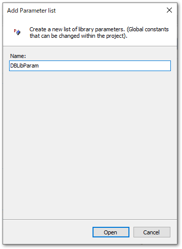
次の例の通り、VAR_GLOBAL CONSTANTにて設定します。
{attribute 'qualified_only'}
VAR_GLOBAL CONSTANT
COMMAND_QUEUE_BUFFER_SIZE :UDINT := 64; // Queue size for database insert command.
DATA_BUFFER_SIZE :UDINT := 10000; // Data buffer size
END_VAR
警告
初期値は必ず設定してください。ライブラリパラメータを設定しない場合、リソースサイズが正しく反映されず、プログラムロジックによっては著しい損害を与える不具合につながる恐れがあります。
プログラム内では、グローバル変数と同様、定数として使用することができます。
<Parameter list名>.<ライブラリパラメータ変数名>
例えば、配列のサイズ指定としても使用できますし、変数初期値としても使用できます。
FUNCTION_BLOCK dequeue
VAR
_queue_usage: UDINT;
_queue_size: UDINT := DbLibParam.COMMAND_QUEUE_BUFFER_SIZE;
nWriteIndex: UDINT;
nReadIndex: UDINT;
queue_buffer: ARRAY [0..DbLibParam.COMMAND_QUEUE_BUFFER_SIZE - 1] OF DbInsertCommand;
END_VAR
このように作成されたライブラリは、使用時に次の通りライブラリマネージャから可変に設定することができますので、求められるアプリケーション要件によりスケールするリソース量に柔軟性を持たせることができます。
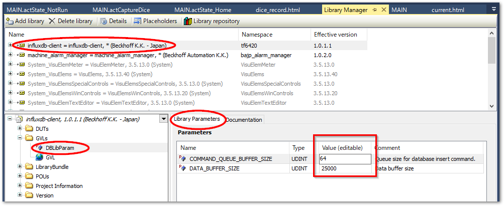
TwinCATプロジェクトからライブラリを作る手順¶
PLC\(>\)Project で右クリックして、
Propertiesを選択する。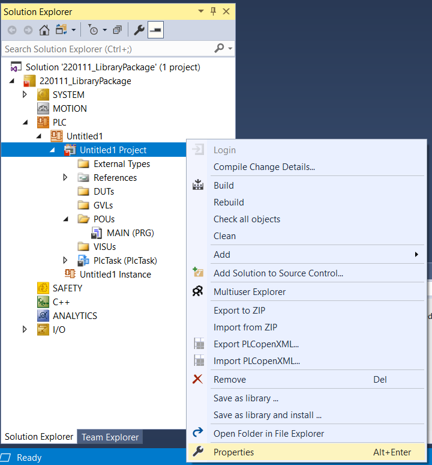
Project Infomation に Library の情報を入力します。 設定必要な項目について以下に示します。
項目
説明
Company
ライブラリを開発する組織名を入力します。
Title
ライブラリ名称を記述します。
Placeholderを未定義にすると、この名称がPlaceholderとしても設定されます。バージョンの連続性を担保するためにも、途中からこの名称を変更しないようにご注意ください。Version
ライブラリバージョンを定義します。必ず4桁のピリオド区切りで定義してください。
Released
VersionのReleasedチェックについてをご覧ください。
Library Categories
カテゴリの登録をご覧ください。
Default namespace
読み出す側とライブラリ内の変数名やファンクションブロック名が被らないように、該当ライブラリ内のリソースの頭に付ける接頭語を定義します。これをnamespaceと言います。ここではLibraryを読み込んだ際に設定される規定のnamespaceを設定します。Library追加後、任意のnamepspaceを設定できます。
Placeholder
作成したライブラリを読み込むと、デフォルトでは
Titleに示したPlaceholderが自動作成されて、これにライブラリが紐づきます。任意のPlaceholderを指定したい場合はこの欄で指定します。派生版のライブラリを作成される場合のブランチ名として利用されると良いでしょう。Author
開発者名を記入します。
Description
説明を記入します。
Global version structure
ボタンを押すと読み込んだライブラリに関するバージョン情報をプログラムから参照する事ができるようにグローバル変数を自動生成します。
Version欄に指定したピリオドで区切られた4つのバージョンの値を順に、iMajor,iMinor,iBuild,iRevisionで取り出す事ができ、Releasedフラグの有無をnFlagsで取り出す事ができます。POUs for property access
ライブラリのメタ情報を取り出すファンクションを自動生成します。読みだしたライブラリ側では、本画面で設定する、
Compay,Title,Versionがそれぞれ取り出せます。Document format
開発ドキュメントの記述方式を選択します。ライブラリドキュメントの作成章のドキュメント記述方式を有効にするため、必ず
reStructuredTextを選択してください。設定内容については、詳細編で詳しく説明します。
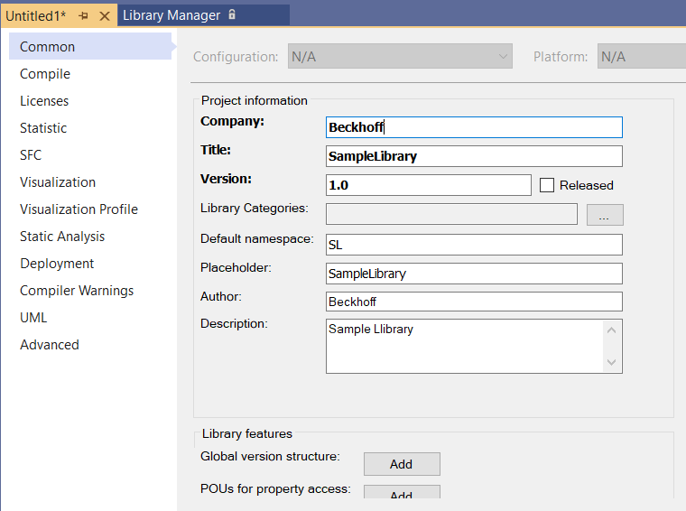
PLC\(>\)Project で右クリックして、
Save as library and install ...を選択する。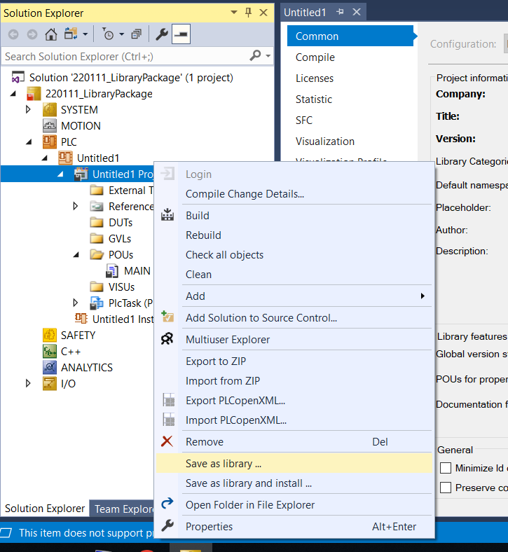
注釈
Save as libraryだけを行った場合、お使いの環境のXAEへのライブラリのインストールは行われません。ライブラリを読み込む方法節で説明するインストール手順を別途実施する必要があります。ライブラリを保存する。
保存形式には次の二つがあります。
library 形式
ソースファイルのプログラムイメージ。ライブラリを使用する開発者がライブラリを読み込んだ後もソースコードを閲覧し、オンラインモニタする事が可能です。ただしプログラムの変更はできません。
compiled-library 形式
コンパイル済みのプログラムイメージ。ライブラリのソースコードを閲覧する事はできません。

{kind=link}
{kind=link}
{kind=link}
詳細編¶
Placeholdersの活用¶
Placeholderとは、ひとことでいうとライブラリに対するショートカットです。それぞれのプログラムやライブラリが直接ライブラリと関連付けられるのではなく、仮想化されたショートカットと紐づく事で、設定によって参照するライブラリの実体を柔軟に切り替える事が可能になります。
プロジェクトへのライブラリの追加節で説明するライブラリ追加手順では、暗黙的にライブラリ名と同名のPlaceholderが作成され、このPlaceholderを経由してライブラリ読み込みされます。通常の手順でライブラリ追加されたライブラリマネージャ画面の図に示される赤下線で引かれた部分にある=の左辺にある文字がPlaceholderです。この=の右辺にあるものが実際のライブラリを示していて、ライブラリ名, バージョン番号（組織名）という書式になっています。デフォルトでは、バージョン番号部分は*となっていて、常に最新のライブラリバージョンと紐づく仕様となっています。

図 3.8 通常の手順でライブラリ追加されたライブラリマネージャ画面¶
注釈
Placeholderを経ずに直接ライブラリを読み込む事は可能ですが、ここでは説明しません。
Placeholderにリンクするライブラリバージョンを切り替える方法は、ライブラリの更新節で示す手順同様、PropertiesのResolution項目で選択します。（図 3.7図参照）
次からPlaceholderを活用する方法に代表的な2例に基づいて操作手順を示します。
共有ライブラリのバージョンを一斉に切り替える¶
複数のライブラリやライブラリを読み込むプログラムで使われているライブラリが共有されるケースがあります。例えば、図 3.9に示す通り、どのライブラリやプログラムもTc3_Moduleという名前のPlaceholderを使用しており、デフォルトで最新版を使う設定となっています。

図 3.9 Tc3_Module 最新版を使う設定¶
このPlaceholderを図 3.10のように、PropertyのResolutionで特定バージョンを使う様に設定を変えると、関連するライブラリやプログラム全てが指定したバージョンのものに固定されます。
{kind=link}
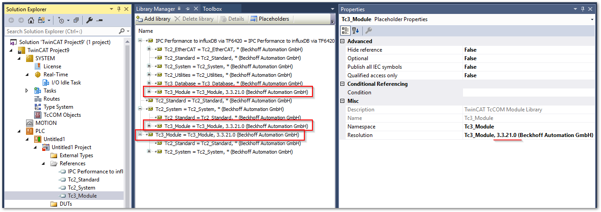
図 3.10 Tc3_Module 特定バージョンに固定した設定¶
別名のPlaceholderを設定する¶
Placeholder名は、デフォルトでライブラリ名と同一のものが自動作成されます。これにより、複数のライブラリが同一のライブラリを共用しても、自動的に同一のPlaceholderが参照される仕組みとなっています。
今度は、敢えて自動生成せずに任意のPlaceholder名を名付けてライブラリを追加してみます。例として、オリジナルのユーザライブラリである、“IPC Performance to influxDB via TF6420” という名前のライブラリを作成しますが、このライブラリが使うTc-Moduleライブラリを、別名のPlaceholderに関連付けてみます。
次に、このユーザライブラリを使う別のPLCプロジェクトにおいて、ライブラリが使うTc-Moduleライブラリとその他が使うTc-Moduleライブラリが個別のPlaceholderとなることを確認してみます。
まずは、「IPC Performance to influxDB via TF6420」ライブラリで別名のPlaceholderでTc-Moduleライブラリを追加する手順を示します。
プロジェクトへのライブラリの追加に示す手順の
Add libraryウィンドウにて左下のAdvanced...ボタンを押します。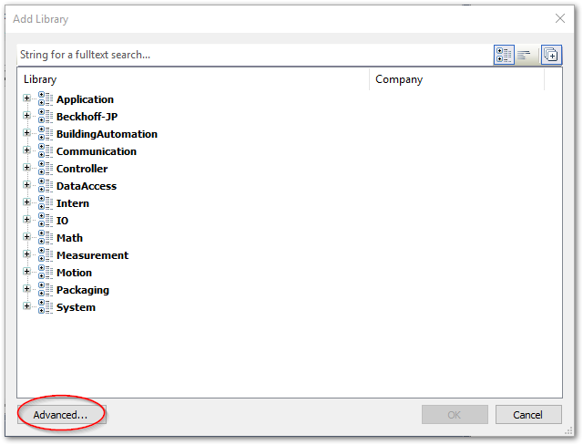
Placeholdersタブを開き、Placeholder nameのフィールドに新たに命名したい名前を入力します。この例として
Tc3-Moduleに対する別名であることがわかるようにTc3-Module-fixed-versionと入力しています。
何等かの文字を入力した時点でXAEにインストールされたライブラリが一覧されます。ここから
Placeholderに関連付けるライブラリを選択します。
追加されたライブラリが、
Tc3-Moduleではなく、指定した名前Tc3-Module-fixed-versionで追加された事がわかります。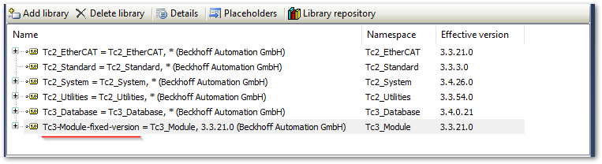
{kind=link}
{kind=link}
上記の手順で作成されたユーザライブラリを追加したPLCプロジェクトのライブラリ構成は、図 3.11の通りとなります。Tc3_Moduleライブラリが複数使われていますが、“IPC Performance to influxDB via TF6420” のユーザライブラリで使われているTc3_Mdoulesライブラリだけは、バージョンが固定された状態となっています。
{kind=link}
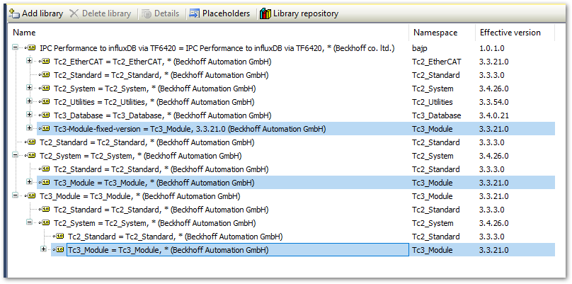
図 3.11 別名のPlaceholderで同一ライブラリを読み込ませた例¶
このように、一部だけ特定のバージョンを使用したい場合などにPlaceholderで区別する方法があります。
読み込み側のPLCプロジェクトでライブラリが使用するライブラリのバージョンを変更できるか？
できません。同一のPlaceholderとなっていれば読み込み元の親PLCプロジェクトでリンクを一括変更できました。しかし、固有のPlaceholderとされた場合は、そのPlaceholderを保有するPLCプロジェクトでのみライブラリのバージョンを設定できますので、今回の場合、固有のPlaceholderを持つ読み込み元のライブラリ側で任意のバージョンへリンク設定を変更する必要があります。
Namespace機能の活用¶
Default namespaceには、ライブラリで使用されるさまざまなリソースに対してユニークとするための名前空間です。
例えば、Default namespaceにbajpと設定します。このライブラリのPOUsでは、MAINというプログラムが使われていました。
このライブラリを読み込んだPLCプロジェクトにも、MAINという名前のプログラムがある場合、名前が被っています。
そこで、ライブラリ側のMAINプログラムは、bajp.MAIN();と記述することで、ライブラリ内のMAINプログラムを呼び出している事を特定でき、無事実行する事ができます。
VersionのReleasedチェックについて¶
このチェックを入れることにより、そのあとプログラム変更を行おうとした際に図 3.12のような警告メッセージが出現します。Releasedチェックが付けられていてもプログラム変更を禁止するのではなく、単なる警告のみです。ここでYesボタンを押すとReleasedチェックが自動的に外れます。
{kind=link}
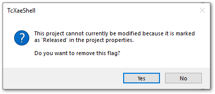
図 3.12 Released チェックのPLCプロジェクトに変更を与えようとした際の警告ダイアログ¶
カテゴリの登録¶
ライブラリ作成元となるPLCプロジェクトのpropertyの設定の中で、Library Categoriesという設定項目があります。この項目を未設定のままにしておくと、図 3.6の例に示すように、全てMiscellaneous（その他）という項目に所属します。
ここでは任意のカテゴリーツリーを生成し、ライブラリ化した際にどのカテゴリに所属させるかの設定までの手順について説明します。
以下のサイトからカテゴリのオブジェクトIDであるUUIDを生成します。
Generate some GUIDs!ボタンを押したらフォーム上にUUIDが生成されますので、そのあとCopy to Clipboardボタンを押してください。サブカテゴリーが必要な場合は2つ生成してください。以下のXMLのうち、
Idタグ部分をクリップボードにコピーしたUUIDに置換し、DefaultNameにカテゴリ名を定義します。次の例に示す通り、
ParentCategoryに親カテゴリのIdを関連付けて定義することで、ツリー構造を定義することができます。不要であれば二つ目以後のLibraryCategoryタグ要素は全て削除してください。<?xml version="1.0" encoding="UTF-8"?> <LibraryCategories xmlns:xsi="http://www.w3.org/2001/XMLSchema-instance" xsi:noNamespaceSchemaLocation="LibraryCategories.xsd"> <LibraryCategory> <Id>f484dac6-21b6-4d52-a832-fa3cc2ceea83</Id> <Version>1.0.0.0</Version> <DefaultName>Beckhoff-JP</DefaultName> </LibraryCategory> <LibraryCategory> <Id>e42e9899-3114-40a3-911f-5f44e2769932</Id> <Version>1.0.0.0</Version> <ParentCategory> <Id>f484dac6-21b6-4d52-a832-fa3cc2ceea83</Id> </ParentCategory> <DefaultName>SystemDiagnostics</DefaultName> <LibraryCategory> <Id>1547e2ea-7ffb-4c94-becc-56f97d1a03bd</Id> <Version>1.0.0.0</Version> <ParentCategory> <Id>e42e9899-3114-40a3-911f-5f44e2769932</Id> </ParentCategory> <DefaultName>IPCPerformance</DefaultName> </LibraryCategory> <LibraryCategory> <Id>ebb42e0a-ab3e-4c49-880e-9e854060901d</Id> <Version>1.0.0.0</Version> <ParentCategory> <Id>f484dac6-21b6-4d52-a832-fa3cc2ceea83</Id> </ParentCategory> <DefaultName>Utility</DefaultName> </LibraryCategory> </LibraryCategories>
警告
登録に使った*.libcat.xmlファイルは大切に保管しておいてください。運用中にカテゴリを追加・削除したい場合に一部の要素のみ更新する機能がありません。カテゴリ定義全体を都度読み込ませる必要があります。
万が一紛失してしまった場合、TwinCATのPLCプロジェクト内のファイルから、既存のカテゴリのUUIDが何かを調べる方法があります。以下のフォルダ構成の中にある*.plcprojファイルを探します。
<<TwinCATプロジェクト名>>/<<PLCプロジェクト名>>/<<PLCプロジェクト名>>.plcproj
このファイルをUTF-8で編集可能なXMLテキストエディタで開いてください。下記の
LibraryCategoriyの中のIdタグを探して、登録済みのカテゴリのメタデータを調べ、本手順書のフォーマットに従って再作成してください。<Project DefaultTargets="Build" xmlns="http://schemas.microsoft.com/developer/msbuild/2003"> <PropertyGroup> : : <LibraryCategories> <LibraryCategory xmlns=""> <Id>{f484dac6-21b6-4d52-a832-fa3cc2ceea83}</Id> <Version>1.0.0.0</Version> <DefaultName>Beckhoff-JP</DefaultName> </LibraryCategory> </LibraryCategories>
*.libcat.xmlというファイル名で、UTF-8エンコードしたテキストファイルで保存します。（*部分は任意の名前）保存したファイルを読み込むには図 3.13の図の通り次の手順を実施します。
TwinCATプロジェクトからライブラリを作る手順で示したProperty設定にて、
Library Categories設定項目右端にあるボタンを押します。Library Categoryウィンドウが現れます。右側のAdd >ボタンを押して現れるメニューからFrom Decription File...ボタンを押します。エクスプローラが現れますので、先ほど保存した*.libcat.xmlファイルを選択して読み込みます。図 3.13の図の下部ウィンドウに示す通り、XMLに定義されたカテゴリーツリーが一覧されます。初期状態では全てにチェックが入っていますので、一度
Noneを押して全てチェックを外します。現在のPLCプロジェクトの提供する機能が含まれる末端のカテゴリだけにチェックを入れます。
OKボタンを押します。
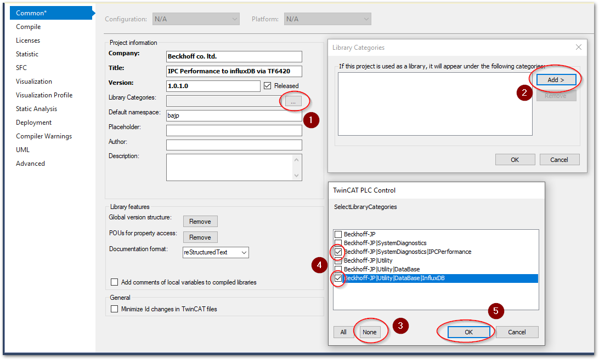
図 3.13 カテゴリの登録操作¶
選択されたカテゴリが一覧されたのを確認し、OKボタンを押してください。
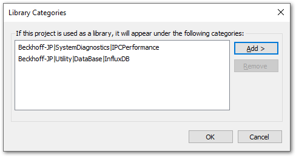
ライブラリを読み込む方法節に示す手順を実施する際にライブラリをインストールすると、図 3.14図の通りのカテゴリに一覧された状態で配置されます。複数個所に一覧されますが実態は同じです。

図 3.14 カテゴリツリーに登録されたライブラリ¶
{kind=link}
{kind=link}
複数カテゴリへ登録するケース
開発者がプログラム機能を流用する場合には、分類された機能の種類から関連プログラム部品を探します。対して、すでに稼働しているPLCプロジェクトには、通常さまざまな種類の機能が組み合わされた状態になっています。
すでに稼働しているPLCプロジェクトを基にライブラリ化する場合、このプロジェクトに含まれる機能全ての分類カテゴリに含まれるように登録します。これにより開発者は目的とする機能が使われているプログラムオブジェクトをすぐに見つけることが容易になります。
この節で示す例では、タスク実行時間やCPUの占有率など、IPCのパフォーマンスメトリクスを収集するファンクションブロックと、そのデータをTF6420 Database serverを使ってInfluxDBへ記録するPLCプロジェクトをそのままライブラリ化しました。このため、IPCPerformanceというカテゴリと、InfluxDBというカテゴリ両方に所属させる事で、どちらの用途からも機能を再利用する事が可能になっています。
ただし、手間を惜しまないのであれば、出来る限り単一の機能にライブラリを分割するのが望ましいです。プログラムの同士の機能の独立性が低いことで、一部の機能の修正により関係ない機能まで影響を受ける事となり、品質面への影響やテスト工数などの管理面での副次的なコストが大きくなるためです。
とはいえ、動作実績のあるプログラムをそのままライブラリ化する事にも価値があります。なにより既存のPLCプロジェクトをそのままライブラリ化すれば良いだけなので手間がほどんど要りません。また、ライブラリドキュメントの作成に示すreStructuredTextによるライブラリドキュメント機能を活用することでプログラム実装例の参考にも大いに役立ち、早期に開発者間での技術情報共有が可能になります。
長期的にはライブラリを単一機能まで分割する「リファクタリング」は欠かせません。しかしこの過渡状態でも流用したいモジュールは多分にあります。そういった場面においてカテゴリやPlaceholderで区別するなどの工夫により、より柔軟な運用が可能になるでしょう。